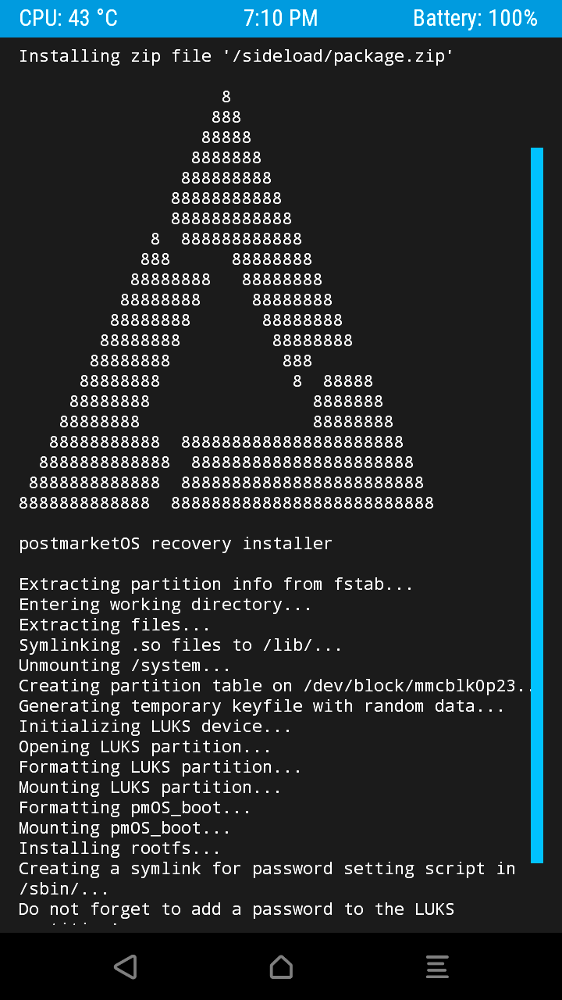
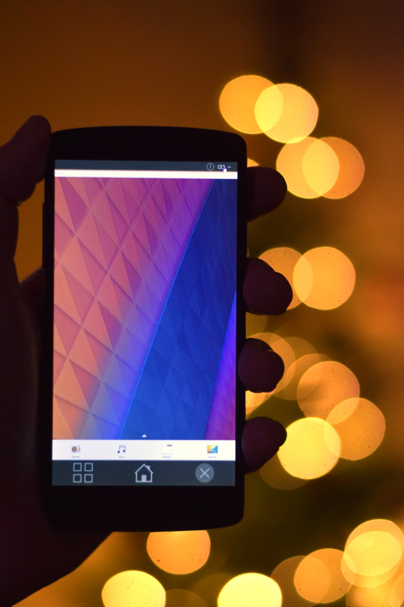

<br><br><br><br> # Modern Linux Environment On Mobile Devices ### Oliver Smith, Akademy 2018 --- class: middle # postmarketOS is experimental -- * Only meant to be used by developers -- * Don't expect the following to work on *your* device: * Phone calls * SMS * Bluetooth * Mainline kernel * Accelerated graphics * Plasma Mobile -- * No updates for closed source firmware --- class: middle # So what's wrong with Android? -- * AOSP (Android Open Source Project) developed behind closed curtains, source not shown before release -- * Stock Android is bundled with proprietary components -- * Official builds of AOSP not available (for almost all devices) -- * Pre-installed software is tracking and showing ads by default, some can't be uninstalled -- * Default app store full of advertising-driven, proprietary apps that track you -- * Default is saving everything in the cloud -- * Two years support max -- * Security issues not patched after support ran out (Stagefright, KRACK, ...) -- * Older devices don't get newer features (e.g. full disk encryption) -- * Building Android needs a powerful PC with huge resources (CPU, RAM, disk space, traffic) -- * Codebase forked for each and every device *and* Android version -- ### *Oh no, running out of space here!* --- class: middle # But there is F-Droid, Replicant, LineageOS and Halium! -- * Excellent, important projects -- * Fix some symptoms, but not the root cause -- * Uphill battle --- --- class: middle # This is not sustainable. -- # Desktop Linux distributions don't have these problems. -- # Let's bend a real Linux distribution to replace Android. --- class: middle # Alright, how do I install a Linux distribution on a phone? -- * Different workflows depending on the target device and host Linux distro -- * Too many manual steps make room for mistakes -- * Guides would be hard to maintain -- * A bunch of shell scripts evolved into `pmbootstrap` --- class: middle # pmbootstrap -- * Sets up multiple chroots for building and flashing -- * Automatic ccache and distcc setup -- * Flashers abstracted with easy, universal commands -- * Almost zero dependencies on the host system (Python 3, openssl, coreutils) -- * Easy reset of the chroots -- * Easy to reproduce issues -- # Multiple chroots? Better have a small base distro then. --- class: middle # Alpine Linux -- * Base installation: ~6 MB -- * Software stack: * musl libc * BusyBox * OpenRC * apk and abuild ("makepkg light") -- * Stable *and* rolling releases -- * Plasma not packaged though --- <img src="img/i9100-weston.jpg" style="height: 600px; float: left; padding-right: 50px"> ### 2017-05-26 # Aiming for a 10 year life cycle for smartphones * 2 booting devices * 1 contributor * LineageOS kernels used * `pmbootstrap` released * Weston on framebuffer drivers --- ### 2017-07-15 # 50 days of postmarketOS * 8 booting devices (+ 8 WIP) * 13 contributors * First non-Android device * First one with Wi-Fi (i9070) * Porting guide --- <center> </center> ---  ### 2017-09-03 # 100 days of postmarketOS * 17 booting devices * 27 contributors * First time with Plasma Mobile and Hildon (both QEMU only) * Android recovery zip *(on the left)* --- background-color: black <center> <video src="vid/plasma-mobile-qemu.webm" controls style="height: 600px; margin-top: 20px"></video> </center> --- <center> </center> ---  ### 2017-12-31 # 219 days of postmarketOS * 42 booting devices * 57 contributors * UIs running on phones: Gnome, Hildon, LuneOS UI, MATE, Plasma Mobile, Weston, XFCE4 --- background-color: black <center> <video src="vid/castor1.webm" controls style="height: 600px; margin-top: 20px; margin-left: -75px"></video> </center> --- background-color: black <center> <video src="vid/castor2.webm" controls style="height: 600px; margin-top: 20px; margin-left: -75px"></video> </center> --- ### 2018-06-09 # One Year of postmarketOS: Mainline Calling! * 84 booting devices * 106 contributors * Nexus 5: using cellular modem from CLI on mainline * Mainline guide --- <center> </center> --- <center> </center> --- <center> </center> --- class: middle # How do I use that pmbootstrap thing anyway? -- ### Super fast setup ```python $ git clone "https://gitlab.com/postmarketOS/pmbootstrap.git" $ cd pmbootstrap $ ./pmbootstrap.py init ``` -- ### Install and flash to a phone ```python $ ./pmbootstrap.py install $ ./pmbootstrap.py flasher flash_kernel $ ./pmbootstrap.py flasher flash_rootfs ``` -- ### Running in QEMU ```python $ ./pmbootstrap.py install --no-fde $ ./pmbootstrap.py qemu ``` --- # Modifying and building packages ```python $ vim aports/kde/kwin/APKBUILD $ ./pmbootstrap.py checksum kwin $ ./pmbootstrap.py build kwin ``` -- ### Variations ```python $ ./pmbootstrap.py build kwin --arch=armhf $ ./pmbootstrap.py build kwin --src=~/code/kwin ``` -- ## How does the build recipe look like? --- background-color: black name: kwin-apkbuild <pre style=" font-size: 12pt; background: black; padding: 15px; position: absolute; top: -10px; left: 60px; color: white; "> <font color="#06989A"># Contributor: Bart Ribbers <bribbers@disroot.org></font> <font color="#06989A"># Maintainer: Bart Ribbers <bribbers@disroot.org></font> pkgname<font color="#4E9A06">=</font>kwin pkgver<font color="#4E9A06">=</font>5.13.4 pkgrel<font color="#4E9A06">=</font>0 pkgdesc<font color="#4E9A06">=</font><font color="#FCE94F"><b>"An easy to use, but flexible, composited Window Manager"</b></font> arch<font color="#4E9A06">=</font><font color="#FCE94F"><b>"all"</b></font> url<font color="#4E9A06">=</font><font color="#FCE94F"><b>"https://www.kde.org/workspaces/plasmadesktop/"</b></font> license<font color="#4E9A06">=</font><font color="#FCE94F"><b>"GPL-2.0"</b></font> depends<font color="#4E9A06">=</font><font color="#FCE94F"><b>"xorg-server-xwayland qt5-qtmultimedia breeze"</b></font> depends_dev<font color="#4E9A06">=</font><font color="#FCE94F"><b>"kdecoration-dev kjobwidgets-dev kcmutils-dev kscreenlocker-dev breeze-dev ..."</b></font> makedepends<font color="#4E9A06">=</font><font color="#FCE94F"><b>"$depends_dev extra-cmake-modules qt5-qttools-dev kdoctools-dev libxkbcommon-dev ..."</b></font> source<font color="#4E9A06">=</font><font color="#FCE94F"><b>"https://download.kde.org/stable/plasma/${pkgver}/${pkgname}-${pkgver}.tar.xz</b></font> <font color="#FCE94F"><b>0001-Revert-udev-Only-handle-devices-from-the-current-sea.patch</b></font> <font color="#FCE94F"><b>0002-Revert-libinput-connection-Don-t-hardcode-seat0-anym.patch"</b></font> subpackages<font color="#4E9A06">=</font><font color="#FCE94F"><b>"$pkgname-dev $pkgname-doc $pkgname-lang"</b></font> <font color="#8AE234"><b>build</b></font><font color="#4E9A06">()</font> <font color="#4E9A06">{</font> cmake <font color="#4E9A06">\</font> -DCMAKE_BUILD_TYPE<font color="#4E9A06">=</font>Release <font color="#4E9A06">\</font> -DCMAKE_INSTALL_PREFIX<font color="#4E9A06">=</font>/usr <font color="#4E9A06">\</font> -DKDE_INSTALL_LIBDIR<font color="#4E9A06">=</font>lib <font color="#4E9A06">\</font> -DKDE_INSTALL_LIBEXECDIR<font color="#4E9A06">=</font>lib <font color="#4E9A06">\</font> -DLIBC_IS_GLIBC<font color="#4E9A06">=</font>0 SKIP_AUTOMOC<font color="#4E9A06">=</font>main.cpp <font color="#729FCF"><b>make</b></font> <font color="#4E9A06">}</font> <font color="#8AE234"><b>package</b></font><font color="#4E9A06">()</font> <font color="#4E9A06">{</font> <font color="#729FCF"><b>cd</b></font> <font color="#FCE94F"><b>"$builddir"</b></font> <font color="#729FCF"><b>make</b></font> DESTDIR<font color="#4E9A06">=</font><font color="#FCE94F"><b>"$pkgdir"</b></font> <font color="#729FCF"><b>install</b></font> <font color="#4E9A06">}</font> sha512sums<font color="#4E9A06">=</font><font color="#FCE94F"><b>"fce3f6fa426dccbd0683ab2de2707a673e2bcf7f3d5a032adf92ba09065e54a532f135... kwin-5.13.4.tar.xz"</b></font> </pre> --- name: credits <!-- last slide! --> <iframe id="credits_iframe" src="about:blank" frameborder="0" style="margin: -100px 0px 0px -100px; height: 800px; width: 450px; border-right: 2px dotted gray; float: left; margin-right: 50px"></iframe> # thanks, everybody! `$ git shortlog --summary | cut -c 8- | sort` <p style="font-size: 8pt; line-height: 1.3"> Adam Van Ymeren, Adrian Siekierka, Aerotinge, ajakk, Alexandroid99, Alex Dills, Alex Roth, Alfie Day, alive4ever, Anton Lazarev, ashirviskas, Ashymad, Attila Szöllősi, Bart Ribbers, Ben Iofel, Bhushan Shah, bhuvi, BK, Bradley Gamble, Brian Otto, Callum A. D. Thomson, carlos killpack, cclauss, Chinmaya Krishnan Mahesh, Claudio Maggioni, Clayton Craft, cmdr2, Craig Tatlor, cybermonkey, Daniele Debernardi, Daniil Yarancev, Davide Gessa, deata, Decatf, Dimitris Zervas, Duncan Guthrie, Emil Lauridsen, Eric Hosmer, Ethan R. Jones, Fabrice Desré, Filip Matijević, fjmax, george99g, George Hopkins, Grant Miller, indefini, j0ki, Jacob Juric, James Heald, JBB, Jean Lucas, Jochen Sprickerhof, Joey Hewitt, Jonty Sewell, joris, joshas, kamnxt, Kenneth Endfinger, Kevin Liu, Klaus, Konrad Dybcio, kskarthik, Larvitar, lawl, Lionel Duboeuf, Lucas Ramage, Luca Weiss, Magnus Gulin, Marcin Mielniczuk, Martijn Braam, Marti Raudsepp, Mathieu Maret, Mayeul Cantan, Michael Hamann, Michael Orishich, montvid, myfreeweb, Nick Boone, Nikk Saan, Nikolay, NotKit, Nutcake, Olgierd Nowakowski, Oliver Smith, Pablo Castellano, Pavel Machek, Peter Mann, Pierre Rudloff, pikpok, Piotr Halama, praticamentetilde, racer123, Rares, Ricardo Rodrigues, rrooij, ryang, Ryan Murthick, SaiKarthik Karra, Samuel Dionne-Riel, Santosh D, shwsh, Sicelo, Simon Schmeisser, steamport, Tomas Safarik, Vadim Rutkovsky, William O-D, Wouter Franken, Xinayder, Yan, yangxuan8282, Yuval Adam, zhenyolka, zhuowei </p> ### get involved / follow development / tell your friends <table style="width: 620px" cellspacing=20> <tr> <td><i class="fas fa-link fa-2x fa-fw"></i> postmarketos.org</td> <td><i class="fab fa-gitlab fa-2x fa-fw"></i> postmarketOS</td> </tr><tr> <td><i class="fab fa-reddit fa-2x fa-fw"></i> /r/postmarketOS</td> <td><i class="fab fa-twitter fa-2x fa-fw"></i> @postmarketOS</td> </tr> </table> --- background-color: black <pre style="color: white;"> Thanks for reading! This slide was not part of the presentation. But in case you're interested in the sources, see: https://gitlab.com/postmarketOS/postmarketos.org/tree/master/static/slides Powered by these nice libraries/fonts: * https://github.com/gnab/remark * https://www.yanone.de/fonts/kaffeesatz * https://github.com/rymbau/polaroid-gallery * https://fontawesome.com </pre>